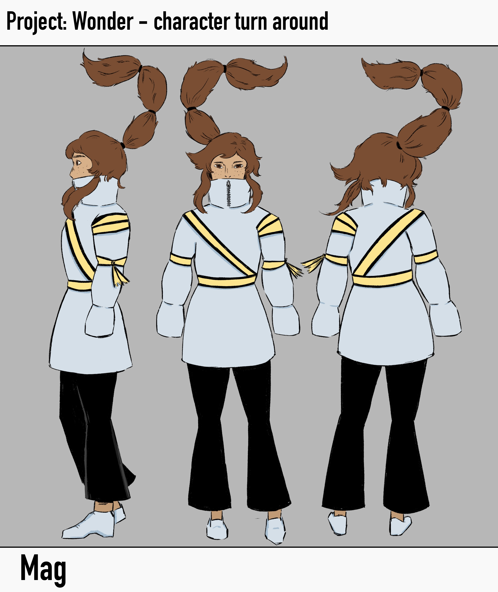
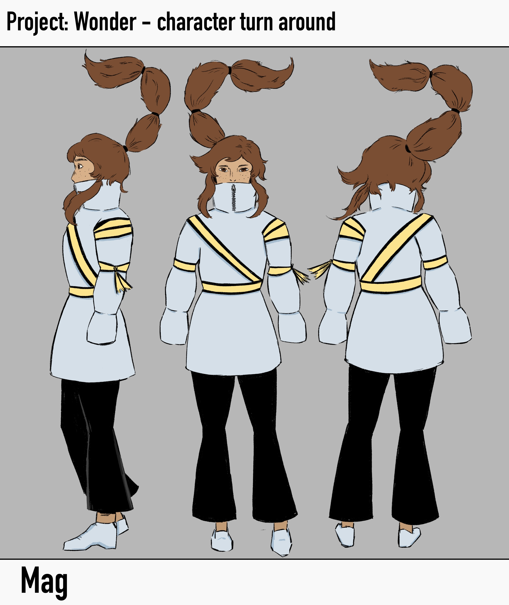

Wonder

For wonder i decided its time i did my own brief, to see what it would be like to write one, and to give me a choice i didnt really see amongst the others. wonder in the form of curisoity, wondering can do so much, and lead to so many stories, genres and ideas. A goal for this project was to make it a game, as i wanted to make at least 1 game this year as a project, but had yet to do so, and this was the last project. and so i plan on working on multiple stages of the game design pipeline, of art, animtions, story and code. i also wanted to try my hand at blender again as i had gotten more time to practice since my first project. But i did have a saftey net as i knew i was taking on a huge amount of work, and that if i didnt reach certain deadlines by a certain time, i would cut down my work to simply being game concept art.

As i am set on a game from the start i want to dive straight into how games function, and what i can do to make a game realistically with the time and resources i have. Games time a lot of time, dedication and multtiple disciplines to create, and while i know how to code, i dont know how to impliment all my work into a functioning game, as well as all the art required so i decided on a simple isometric view, as it would be mostly 2D, but still have the perspective of depth.


i had started to dedicate too much of my time to the librarian character alone, since designing a character takes a lot of time and effort, and around this time is when i realised i wouldnt be able to make a fucntioning game. the amount of effort it takes to create the art and story alone would be hard to handle, making a functioning game is completely unrealistic. but i still wanted to experiment with 3D and animation rigging to see if i could pull it off. at this point i also started working on a second character, Mag. Mag would be the main protagonist the player plays as and she'd had her own gravity erased, which extends to near by objects. this quirk allowed me to have a lot of fun thinking of how a character with no gravity would behave and use that power.

The librarians pet snake ouroboros. he would act as a respawn point

While my 3D modelling skills had definitely improved with some practice and time, i wasnt nearly good enough to model an entire character in the time i had left, and so decided since i wasnt meeting my overambitious checkpoints it was time to be real, and stick to creating 2D character work for the game. my new goal was to create 2 character turn arounds for the librarian and mag, as well as a shot of them interacting in an in game environement to create an example of what this game could look like if it was fully realsied.


 


In the end i was increadibly proud of whati had created, even if it wasnt what i had set out on doing initially, i had created 2 character turn arounds and a in game setting with them interacting that looked professional. in the future i want to take this idea i had further, polishing the characters and even creating the game itself.